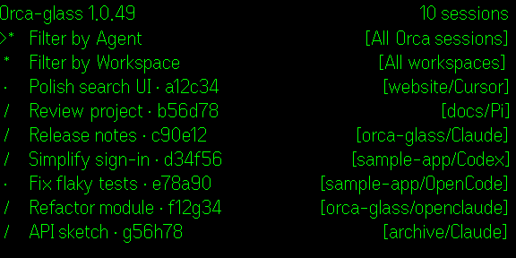
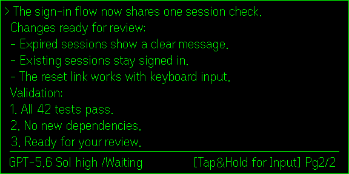
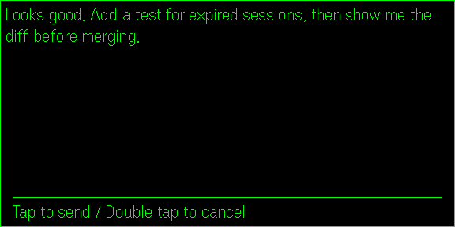
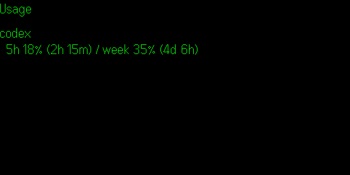
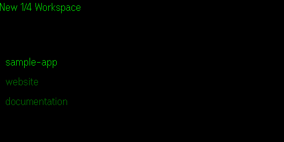
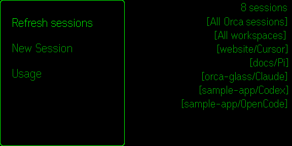

Read your coding sessions. Speak your next step.
Six native simulator captures, using fictional Cursor, Pi, Claude, Codex and OpenCode sessions. The reader and voice example is Codex. Each image is 576 × 288 pixels. App rendering is unchanged; exported transparency is displayed on black.
Exact profile description · Asset details and release preparation · Corrected privacy policy and termsThe corrected PDF explains processing on your own PC and accounts, with no collection or sharing of app data by Quiet Signal. It is ready for review; replacement of the portal-generated attachment is still pending.
The selected 24 × 24 icon is saved in the portal and passes the required 2 × 2 pixel block checks. The icon folder contains only this PNG and its editable GIMP source. No review submission or publication has occurred.






Keep up with your coding agents from your G2 glasses. Orca Glass connects to Orca on your Windows PC so you can read a conversation, check whether an agent is working or waiting, and speak your next instruction without returning to the keyboard. • Browse connected agent sessions and filter by provider. • Read conversation text with native scrolling and live activity status. • Hold to speak, release to review the transcription, then click to send or double-click to cancel. • Keep the conversation visible while you review a voice reply. • Start a Codex session in an existing Orca workspace. • Check available usage limits from the session-list menu. Requires G2 glasses, the Even Realities Android app, Orca running on Windows, and the open-source Orca Glass companion bridge on your PC. The Windows bridge source and setup notes are available on GitHub below. Voice transcription runs locally on your PC using Whisper. English only. Codex is the primary supported workflow. Other connected agents can appear in the session list; conversation support depends on their terminal format. This app controls agents running on your PC; it does not run a coding agent on the glasses. Try the built-in demo to explore sample sessions without a PC connection. The current build uses a private Tailscale connection and requires access to the configured PC. It is not yet a self-service setup for arbitrary PCs. Windows bridge source and setup: https://github.com/eugene8080/orca-glass/tree/windows-android-codex Independent Windows/Android fork of Orca Glass by 2ero20ne, used under the MIT License. Original project: https://github.com/2ero20ne/orca-glass